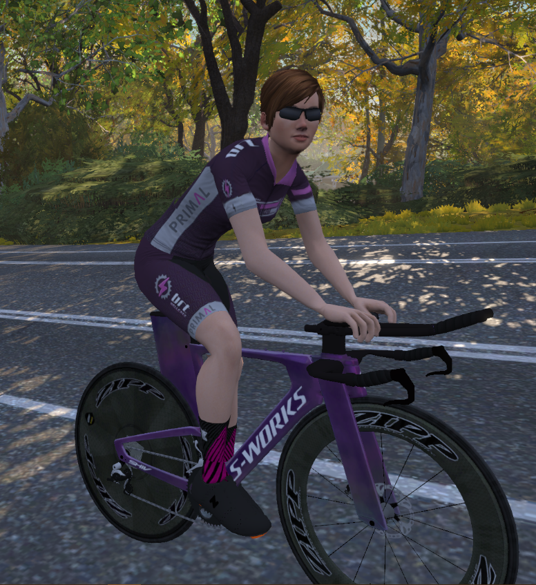

Hellcatz is the ladies only sub-team of the Bolt Race Team. We’re a passionate, supportive group of women with representation in all grades, A—D, and from all over the world. With the aid of Velocity Vixen and ZSUN, the Hellcatz created the wildly popular Wild Women Racing Series, which has seen over 200 women competing in our first & second series.
Our team is built on the principles of passion, trust, courage, positivity and friendship.
We’re currently also looking for A grade women to join our team to help us in the upcoming Zwift Classics, racing against a number of pro continental teams! These will be running from mid June to early September, start times: 7pm AEST / 11am CEST / 10am BST / 5am EDT.
To be a part of the wickedly awesome Hellcatz, please complete our membership form. We’ll send you an e-mail with details about joining the team on ZwiftPower, links to our Facebook groups, and an invite to Discord.
Any queries or requests for more information can be sent to Jessica Hamilton, BRT Team Owner, or via Facebook.